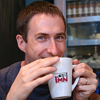

Dr Chris Ewels
|
| |
|
Nanotechnology Image Gallery
Contact
Details
Biography
: A brief history, CV
Science
: Details of my research
Science
Communication : Images, Vega Trust, Web
Publications
: Including thesis, Web sites
|

|
| |
|
|
|
I'm a CNRS Research Director at the Institute of Materials in Nantes, France, working
on computer modelling of atomic-scale point and line defects, new nanostructures and
composite nanomaterials, primarily with carbon. This includes intrinsic defects in carbon
and boron nitride nanomaterials, defects in graphite and fullerenes,
gas absorption and chemical bonding to nanostructures, nanotube functionalisation, novel
nanostructures, and the interaction between impurities such as hydrogen and dislocations
in diamond and silicon.
|
Laboratory Website:
www.cnrs-imn.fr
Tel: +33 (0)2 40 37 64 07
Address:
Institut des Mat�riaux (IMN)
2 Rue de la Houssini�re
BP32229
44322 Nantes Cedex 3
FRANCE
|
Currently
- Research Director DR2 CNRS (Section 05 � Condensed Matter : Organisation and dynamics)
- Within the group � Physics of Materials and Nanostructures � at the Institute of Materials Jean Rouxel � Nantes (IMN)
- Coordinator of the transversal action � NanoCarbon � within the IMN
- Invited Professor, Sussex University Condensed Matter Physics, UK (2016-)
- Invited Professor, "Bio-Nano Electronics Centre", Toyo University, Tokyo (2018-2021)
Qualifications
- 2011: � Habilitation � Diriger des Recherches � (higher PhD) from Nantes University, speciality Physics of Materials.
- 1993-97: Doctoral Thesis, Exeter University:"Density Functional Modelling of point defects in semiconductors"
- 1989-93: Undergraduate Degree, BA Hons, Metallurgy and Science of Materials, Keble College, Oxford University
Research Themes
- Atomic scale modelling using DFT of carbon-based nanomaterials
- Point defects (intrinsic and extrinsic) and line defects (dislocations, grain boundaries, �), their electronic structure, diffusion and aggregation
- Interaction of nanomaterials with their environment (substrate, electrodes, gas absorption, �)
- Spectroscopy of nanomaterials: Optical (Raman, FTIR), Electronic, X-ray, experimental and simulation
- New nanostructures, their simulation and implementation
- Science Communication (notably new media)
Publications (as of 10/2018)
- 170 publications in internation peer reviewed journals (H-Factor : 38)
- 6 book chapters
- Complete publication list.
Current Research Projects (2018)
- Coordinator H2020 "Enabling Excellence", European Marie Curie Training Network ITN on graphene-based materials
- Coordinator ANR "EdgeFiller", French National Project on collapsed nanotube filling
- Coordinator Paris-Scientifique "NEWTUBE", Regionally Funded project on cycloparaphenylene complexes
- Partner, Management Committee Member, "MultiComp", European COST Action CA15107, Multi-functional Nanocarbon composite materials
- Member, ANR Labcom Defier.
Other Research Community Activities
- Committee Member � British Carbon Group � (2002-)
- Committee Member � GDR-I Graphene Nanotubes � (2008-)
- Co-organiser annual international nanocarbon conference � ICAMM, HeteroNanoCarb, GDRI-GNT2013, �
- Organiser of �PhD double degree programme� between Univ. Toyo and Univ. Nantes
- Science Communication : Video (public / schools / BBC), Scientific Images, school presentations, f�te de la science, �
Linkedin
ResearchGate arxiv
ORCID 0000-0001-5530-9601, Google Scholar, ResearcherID A-1543-2012.
|
 |
|
|
|

 Back
to homepage
Back
to homepage |
|
Last modified
Janvier 6, 2016
|
| |
|